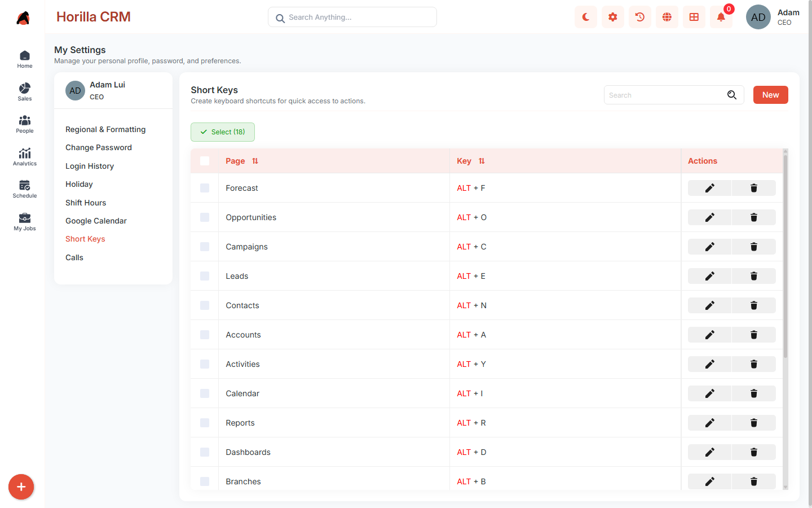

Introduction
The Short Keys module lets you jump between sections of the CRM with customisable keyboard shortcuts. You can create, change and manage your own shortcuts, and the module works with both predefined and user-defined combinations across operating systems. Open it from My Settings → Short Keys.

Key Features and Functionalities
1.1 Predefined Short Keys
Purpose: give every user a default set of shortcuts as soon as the account is created, so the optimised workflow is available straight away.
The defaults are presented in a customisable table. The shortcuts named on the page are:
| Key combination | Action |
|---|---|
| ALT + F | Forecast |
| ALT + D | Dashboards |
| ALT + R | Reports |
The documentation states that the default set includes further shortcuts beyond these three ("and more"), but it does not name them.
The default keys are assigned automatically and are adjusted to the user's operating system so that they work immediately.
1.2 Customization Options
Purpose: let users tailor their shortcut setup to their own workflow.
- Add a shortcut with the New button.
- Change an existing shortcut with the edit (pencil) icon.
- Remove a shortcut with the trash icon.
To set a shortcut up, select the page or command it should trigger, assign a unique key combination to it and save.
1.3 Operating System Adaptation
Purpose: keep shortcuts intuitive and functional on every operating system.
- The command key adapts automatically based on the detected user agent: ALT on Windows, Option on macOS, or the equivalent on Ubuntu.
- This gives a consistent experience whatever the device, and aligns the shortcuts with the platform's own keyboard layout for better accessibility and usability.
1.4 Dynamic Shortcut Display
Purpose: help users discover and learn the available shortcuts without having to memorise them.
- Hold the command key (for example ALT) for 2–3 seconds and a pop-up window appears listing every shortcut currently available.
- The list is tailored to the user's operating system and to the shortcuts they have configured.
- This interactive reference makes the system easier to adopt and shortens the learning curve.